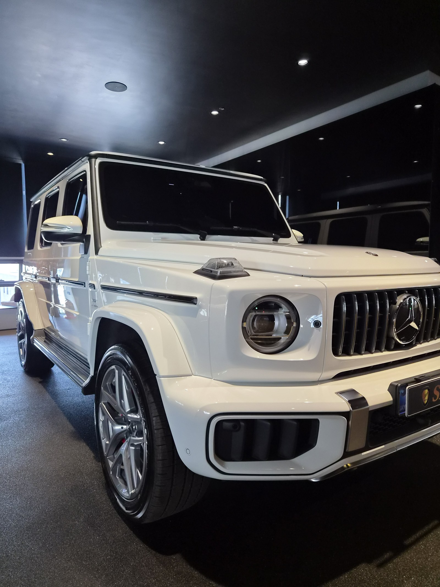
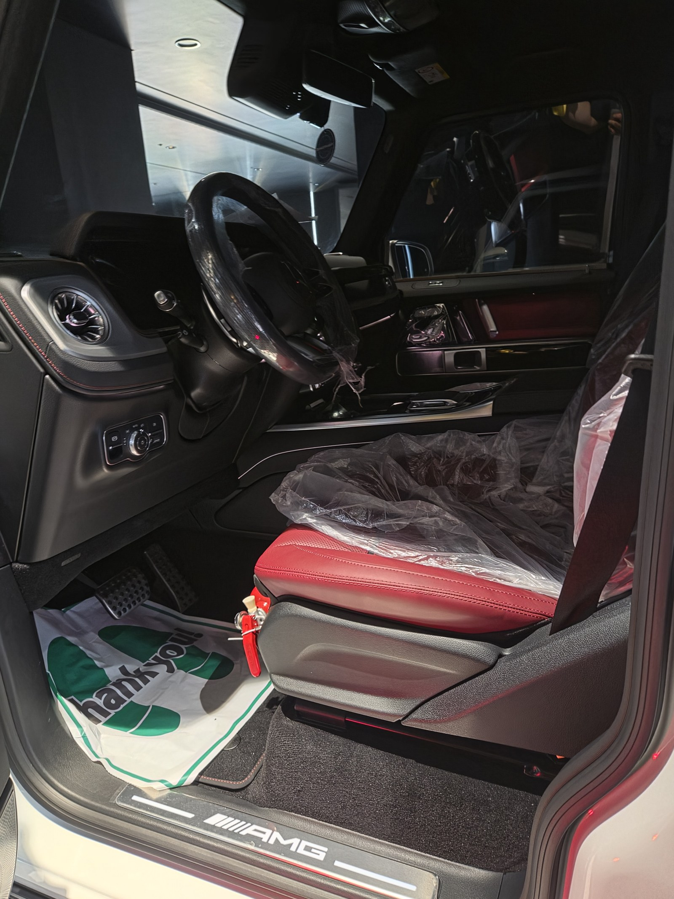
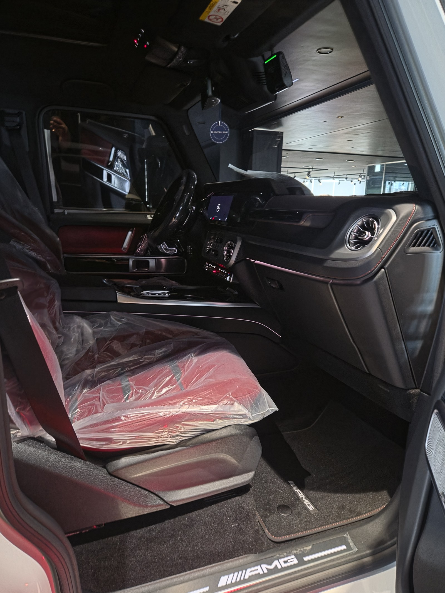
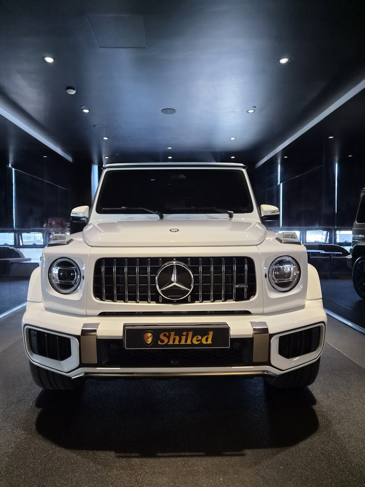
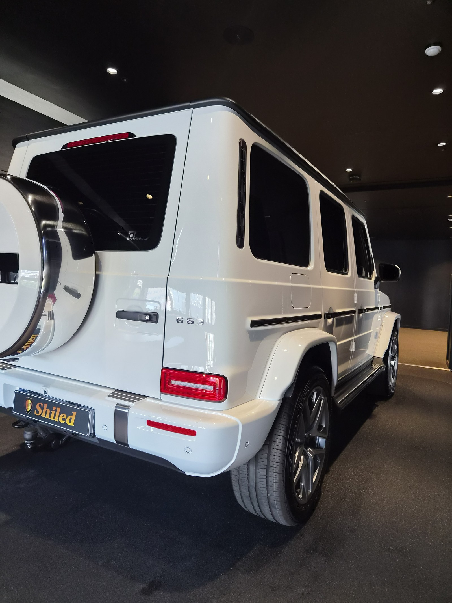
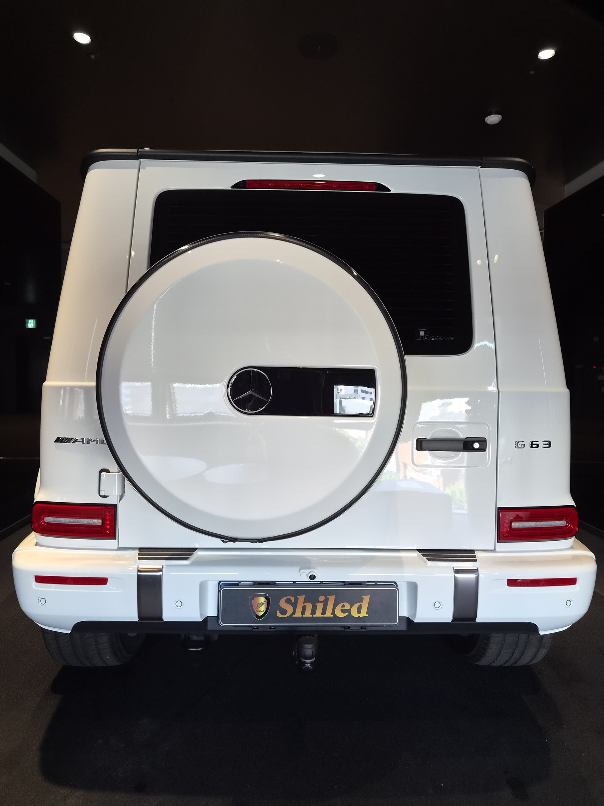
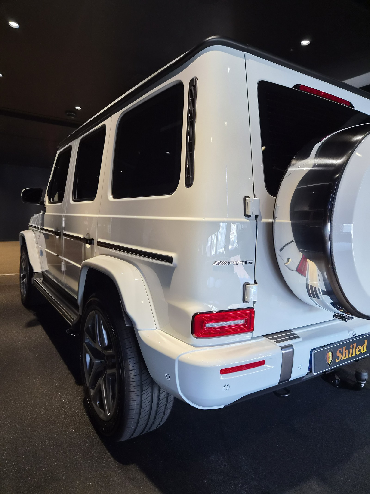
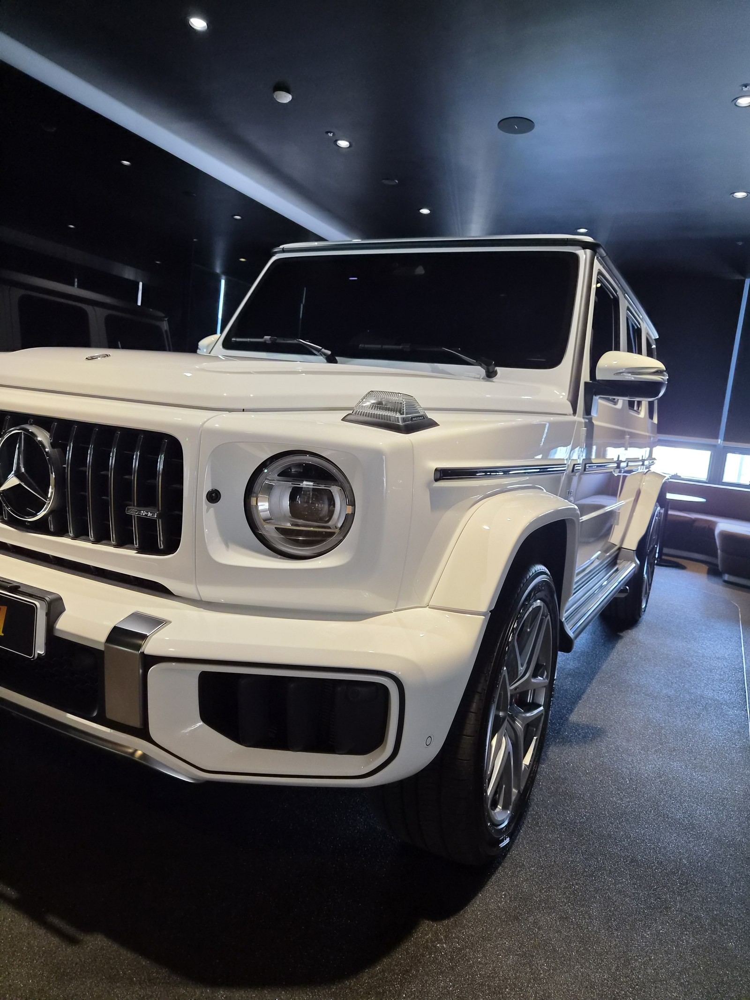
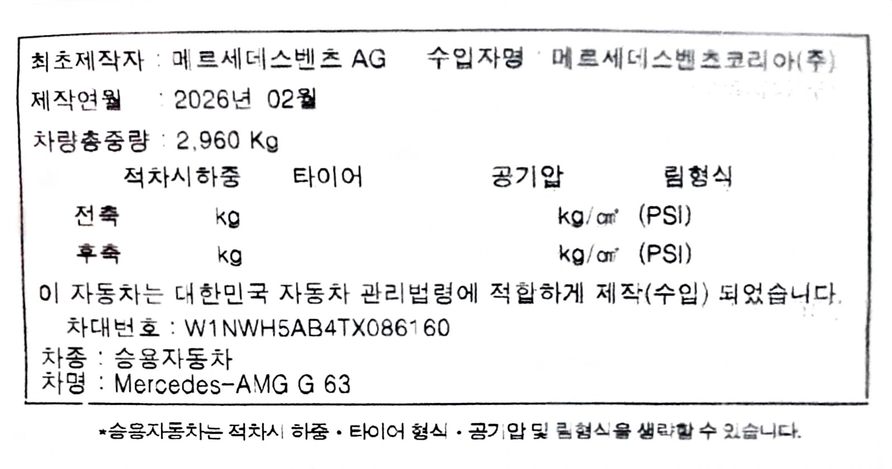

메르세데스-AMG G63 백색입니다. 아직 출고 전, 새 차입니다.
부산 유리막코팅으로 G-PRO를 올렸습니다.

새 차인데 왜 출고 전에 코팅을 하나
도장면이 가장 깨끗할 때 올리는 코팅이 가장 오래갑니다.
출고 후에는 운행과 세차로 미세한 잔기스와 오염이 쌓이기 시작합니다. 그게 쌓이기 전, 신차 상태 그대로일 때 코팅막을 입혀두는 겁니다. G클래스는 각진 패널이 많아 조명 반사로 시공 상태가 더 잘 드러나는 차종이라, 부산 유리막코팅 중에서도 출고 전 시공 효과가 특히 큽니다.


실내는 아직 보호 커버 그대로
시트와 도어에 운송용 보호 비닐이 그대로 씌워져 있는 신차 컨디션입니다.
외부 도장 코팅과 함께, 인도 전까지 실내도 이 상태 그대로 깨끗하게 관리됩니다.

백색 AMG G63에 왜 G-PRO인가
G-PRO는 경도를 높여 스크래치 내성을 강화하는 하드코팅입니다.
G클래스는 직선과 각으로 이루어진 박스형 바디라, 작은 스크래치도 조명 아래서 눈에 잘 띕니다. G-PRO를 올리면 표면이 단단해져 오프로드 성향이 있는 차량에도 잘 어울리는 스크래치 내성을 확보할 수 있습니다. 코팅제는 대표가 화학공학 전공으로 직접 개발·제조한 제품입니다.
기술자의 팁
신차라고 바로 코팅을 올리지 않습니다. 운송·전시 과정에서 묻은 미세 오염을 디테일링 세차와 탈지로 걷어낸 뒤에 올립니다. 깨끗한 바탕 위에 올려야 코팅이 제대로 밀착합니다.


후면 스페어타이어 커버까지
G클래스의 상징인 후면 스페어타이어 커버는 곡면과 평면이 만나는 자리입니다.
이런 자리일수록 코팅막이 균일하지 않으면 얼룩이 그대로 드러납니다. 커버 테두리까지 코팅제가 고르게 퍼지도록 손으로 직접 꼼꼼히 도포했습니다.


시공증명서를 함께 드립니다
모든 시공 차량에 시공증명서를 드립니다.
차종·시공일·코팅제 시리얼 번호가 적혀 있고, 홈페이지에 등록해 보증을 받으실 수 있습니다. 이 차는 G-PRO 코팅으로 기록돼 있습니다.

차종·시공일·코팅제 시리얼이 기재된 시공증명서
자주 묻는 질문
Q. 유리막코팅, G클래스도 출고 전 시공이 필요한가요?
A. 필요합니다. 도장면이 가장 깨끗한 시점은 출고 직후입니다. G클래스는 각진 패널이 많아 조명 반사로 시공 상태가 더 잘 드러나는 차종이라, 출고 전 시공의 효과가 특히 큽니다.
Q. 백색 AMG G63에는 왜 G-PRO를 올렸나요?
A. G-PRO는 경도를 높여 스크래치 내성을 강화하는 하드코팅입니다. G클래스처럼 각진 패널과 직선 라인이 많은 차체는 작은 스크래치도 눈에 잘 띄기 때문에, 표면을 단단하게 지켜주는 G-PRO가 잘 맞습니다.
Q. 유리막코팅과 광택은 뭐가 다른가요?
A. 광택은 도장면 표면의 스월·잔기스를 연마해 평탄하게 만드는 작업이고, 유리막코팅은 그 위에 유리질 보호막을 입혀 오염과 스크래치로부터 도장면을 지키는 작업입니다. 신차는 보통 광택 없이 코팅만으로도 충분한 경우가 많습니다.
Q. 신차코팅도 전처리를 하나요?
A. 합니다. 신차라도 운송과 전시 과정에서 미세 오염이 묻습니다. 디테일링 세차와 탈지로 표면을 정리한 뒤 코팅을 올려야 코팅막이 도장면에 제대로 밀착합니다.
Q. 쉴드광택 위치와 예약은 어떻게 하나요?
A. 부산 남구 유엔로220 1F 쉴드광택입니다. 예약·상담은 010-3384-1850, 대표 최한중이 직접 상담하고 책임 시공합니다.
새 차일수록 시작점이 다릅니다. 가장 깨끗할 때 입혀두십시오.
제품을 직접 만드는 사람이 직접 시공합니다.
유리막코팅을 고민 중이시면 편하게 연락 주십시오.
어떤 차를 타냐보다 어떻게 타냐가 중요합니다~!
시공 중에는 전화를 받지 못할 때가 많습니다.
카카오톡으로 차종과 원하시는 시공을 남겨주시면 확인 후 답변드립니다.
쉴드광택 · 부산 남구 유엔로220 1F · 대표 최한중